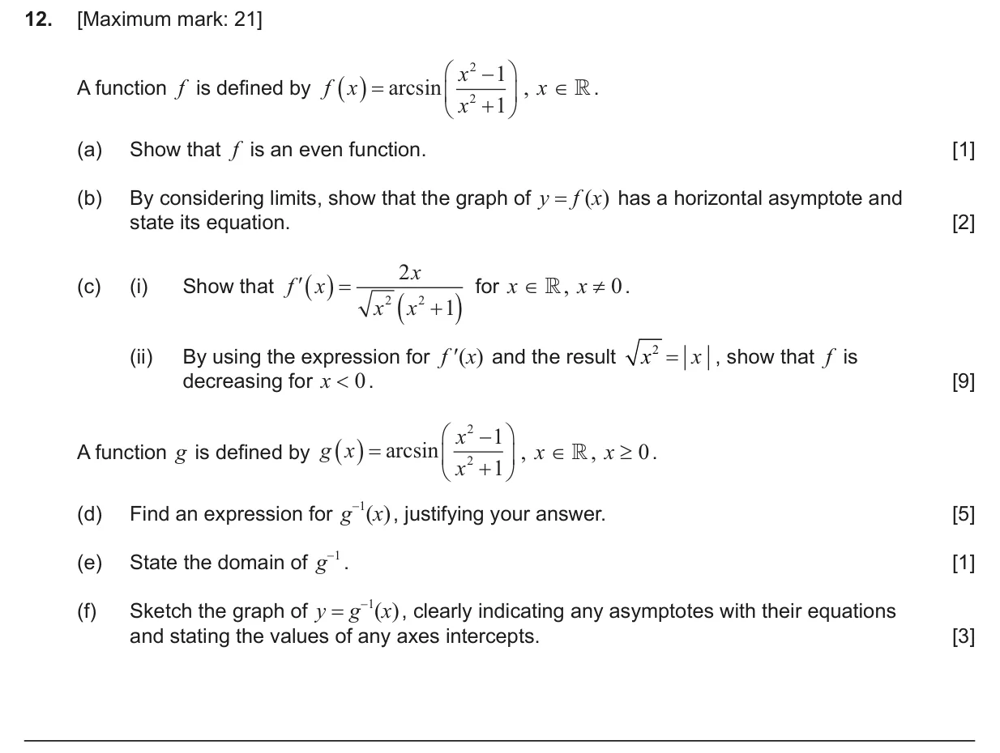
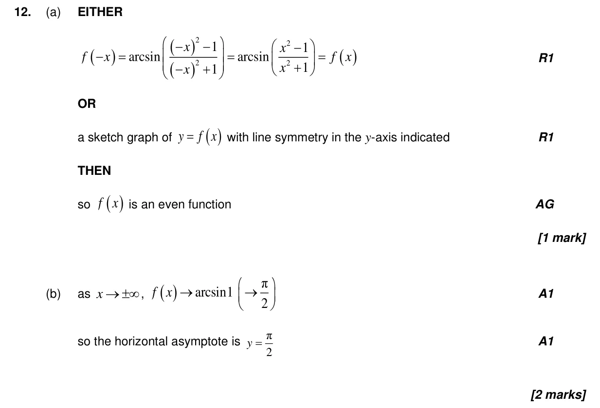
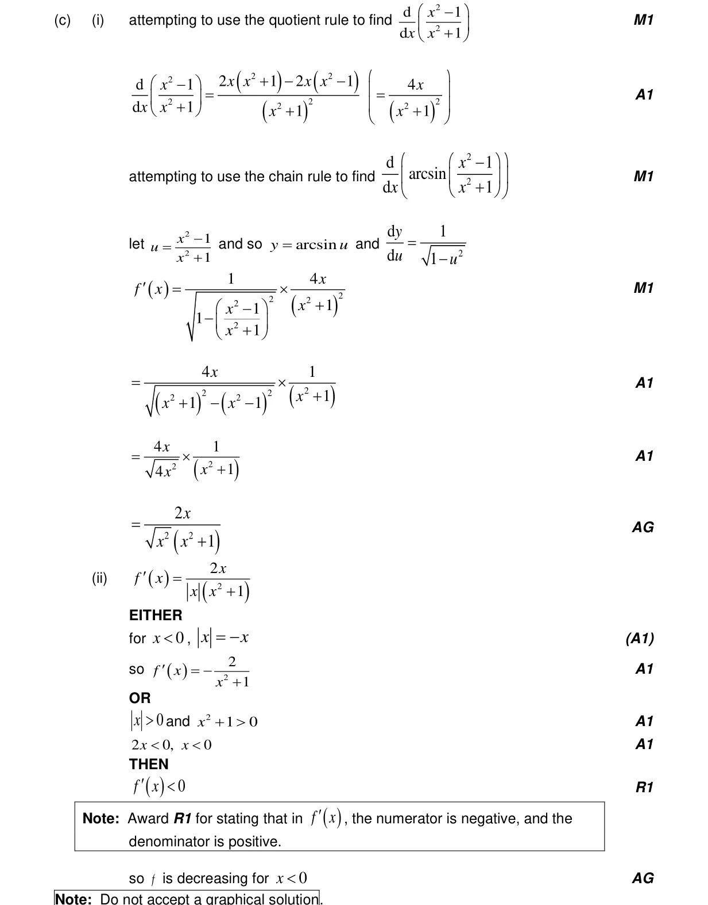
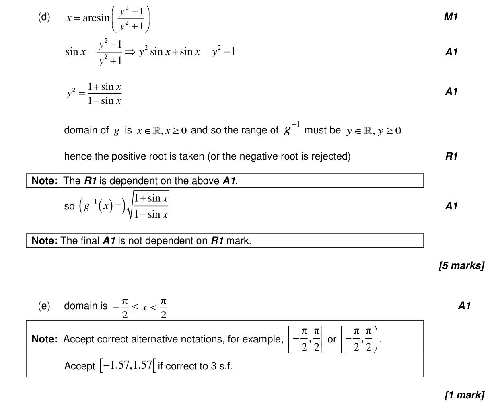
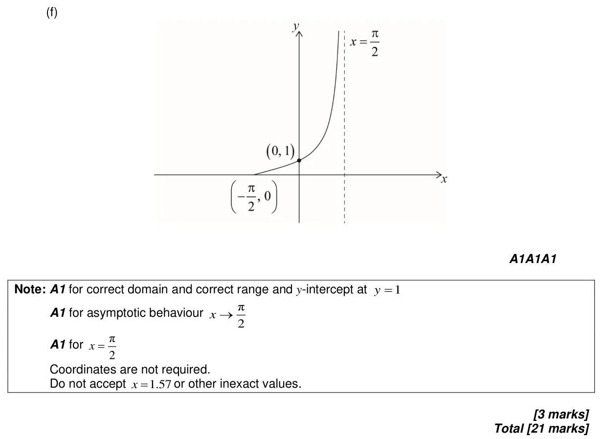

5.15 Further standard derivatives and integrals5.2 Increasing and decreasing functions3.9 Reciprocal trigonometric ratios, Pythagorean identities and inverse trigonometric functions2.14 Odd and even functions, inverses with a restricted domain, self-inverse functions2.2 Functions, notation, domain, range and inverse as reflection2.3 Graphs of functions5.12 Continuity, differentiability, limits and differentiation from first principles
Question

Markscheme



